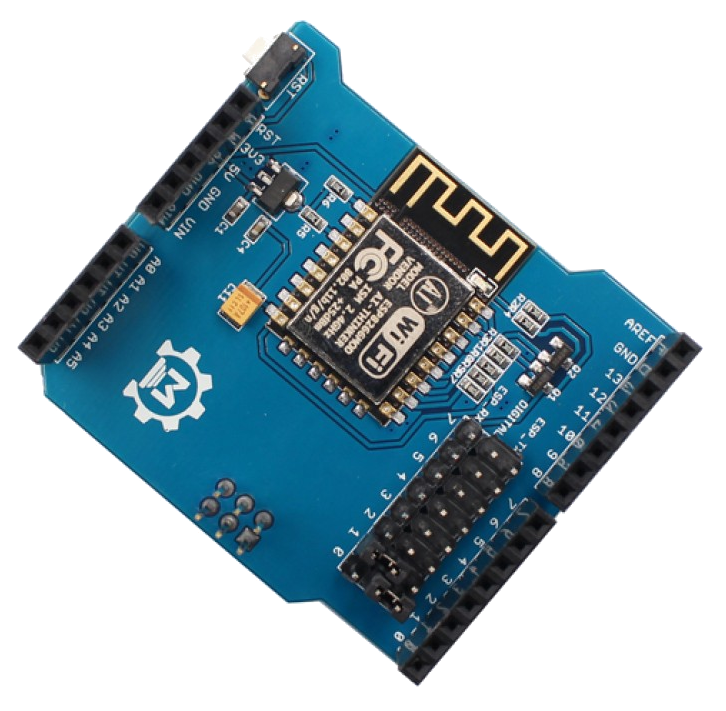
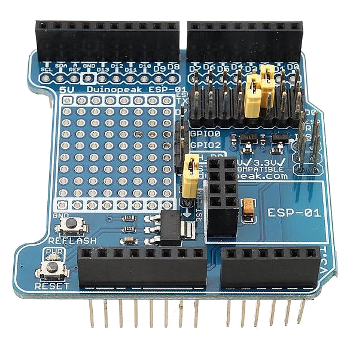

ESP8266 (WiFi Boards) - AT Version Issues and Solutions


Unfortunately the Espressif ESP8266 based WiFi Boards that are available for sale routinely come with versions of the firmware that simply do not work with EX‑CommandStation. This now seems to include the recommended Makerfabs ESP8266 WiFi Shield.
Which is correct version of the AT firmware
ONLY Version 1.7.4 is known to work reliably.
That means all versions both before or after 1.7.4 are not suitable. So don’t be fooled in thinking that if it has a version later than that it will be ok. It won’t!
Symptoms of an Incorrect firmware Version
There several common symptoms of a an incorrect firmware version:
If you set up the command station in Access Point (AP) Mode, then the SSID (Network Name) the displayed will be “DCCEX_SAYS_BROKEN_FIRMWARE” or “UPDATE_ESP_FIRMWARE”.
You can’t connect to the displayed Access Point.
Your phone can connect to the Access Point, but can’t connect your WiFi throttle (e.g. Engine Driver or wiThrottle) to the EX‑CommandStation.
You can connect and use a phone once, but it will not connect again unless you re-start the EX‑CommandStation.
You can connect and use one phone, but it will not allow connection of a second phone, or the second phone works, but it disconnects the first phone.
Find Your AT Version
It is important to find out which version of the firmware you board has and correct it if necessary.
There are two basic ways that you can check:
Checking AFTER you load the EX-CommandStation software
One you have loaded the EX‑CommandStation software you will be able to see the AT version in the start-up log by connecting the serial monitor in either the EX‑Installer or Arduino IDE (whichever you used to upload the EX‑CommandStation onto your device).
You can check the AT version two ways. Which is best for you depends on how you loaded the EX‑CommandStation software:
Checking the AT version using EX-Installer
Once you have successfully loaded the EX‑CommandStation software:
Click back through the pages of the EX‑Installer till you get to the ‘Select your Device’ screen
Click on the View device monitor button
A new window will open and a lot of text will appearYou need to look for a line that will have a section highlighted in green
e.g. AT version:1.7.4.0(May 11 2020 19:13:04)
Alternately, you can enter the command <+GMR> and click Send. A similar line will be shown.
If it says anything other than 1.7.4 in that line, then you have the wrong version you will need to follow the instructions at the end of this page to correct it.
Checking the AT version with the Arduino IDE
If you loaded the EX‑CommandStation software using the Arduino, once you have successfully loaded the EX‑CommandStation software:
select Tools -> Serial monitor from the menus
A new pane will open at the bottom of the IDE window will open and a lot of text will appear
you need to look for a line similar to the following
e.g. AT version:1.7.4.0(May 11 2020 19:13:04)
Alternately, you can enter the command <+GMR> and click Send. A similar line will be shown.
If it says anything other than 1.7.4 in that line, then you have the wrong version you will need to follow the instructions at the end of this page to correct it.
Checking BEFORE you load the EX-CommandStation software
How to check before you load the EX‑CommandStation software will depend on which WiFi shield or board you are using:
Checking the AT version of a ESP-01 or ESP-01s
{kind=link}
Figure 35 ESP-01
There are a number of ways that you can check the AT version an a ESP-01 or ESP-01s:
with a USB Serial Adapter
with a USB to TTL CH340G Converter Module Adapter
with a Arduino Uno
Checking the AT version of a ESP-01 with a USB Serial Adapter
-converter.png)
Connect the ESP01 to the serial adapter with the instructions on here: https://remotexy.com/en/help/esp8266-firmware-update (see the section on ‘Connection via the USB-UARt adapter’)
Note the orange wire is not needed for checking the AT version.Plug the serial adapter it the PC
Open the Arduino IDE
Select Tools -> Serial monitor from the menus
Select baud:
115200andBoth NL & CRA new pane will open at the bottom of the IDE window will open
Enter the command
AT+RSTand click Send.Enter the command
AT+GMRand click Send.
It will reply with something like AT version:1.7.4.0(May 11 2020 19:13:04)
If it says anything other than 1.7.4 in that line, then you have the wrong version you will need to follow the instructions at the end of this page to correct it.
Checking the AT version of a ESP-01 a with a USB to TTL CH340G Converter Module Adapter
Todo
Checking AT version with a USB to TTL CH340G Converter Module Adapter prior to upload
{kind=link}
{kind=link}
{kind=link}
Connect the ESP01 to the adapter
Plug the adapter it the PC
Open the Arduino IDE
Select Tools -> Serial monitor from the menus
Select baud:
115200andBoth NL & CRA new pane will open at the bottom of the IDE window will open
Enter the command
AT+RSTand click Send.Enter the command
AT+GMRand click Send.
It will reply with something like AT version:1.7.4.0(May 11 2020 19:13:04)
If it says anything other than 1.7.4 in that line, then you have the wrong version you will need to follow the instructions at the end of this page to correct it.
Checking the AT version of a ESP-01 a with a Arduino Uno
Todo
Checking AT version with a Arduino Uno prior to upload
Checking the AT version of a Makerfabs ESP8266 Wifi Shield
{kind=link}
Todo
Checking AT version ESP8266 Wifi Shield prior to upload
Checking the AT version of a Duinopeak ESP8266 WiFi Expansion Board
{kind=link}
Todo
Checking AT version ESP8266 WiFi Expansion Board prior to upload
Checking the AT version of a Mega+WiFi

Todo
Checking AT version Mega+WiFi prior to upload
What to do if you have the wrong AT Firmware version
The steps necessary to correct the AT version will depend on your hardware:
We strongly recommend upgrading or downgrading to the “NonOS AT” version 1.7.4 available on our ESP8266 (WiFi Boards) download page prior to reaching out for support from the team.
Correcting the AT version on a ESP-01
Correcting the AT version of a ESP-01or ESP01s requires additional hardware. One of following is required:
A USB to ESP-01 Adapter
A USB to TTL CH340G Converter Module Adapter
An Arduino Uno
Correcting a ESP-01 with a USB Serial Adapter
See https://remotexy.com/en/help/esp8266-firmware-update/
Correcting a ESP-01 with a USB to ESP-01 Adapter Board
Correcting a ESP-01 or ESP-01s with a USB to TTL CH340G Converter Module Adapter
The early/normal boards needs to be modified to be able to temporarily connect GND to GPIO 0.
See here for the modification needed https://www.mogtour.com/wp-content/uploads/2021/01/ch340g.pdf
Later boards do not require the modification.
See https://www.allaboutcircuits.com/projects/update-the-firmware-in-your-esp8266-wi-fi-module/
Correcting a ESP-01 with a Arduino Uno
See https://cordobo.com/2300-flash-esp8266-01-with-arduino-uno/
Or https://remotexy.com/en/help/esp8266-firmware-update/
Correcting the AT version on a Makerfabs ESP8266 Wifi Shield
Correcting the Makerfabs ESP8266 Wifi Shield With a USB to TTL Converter Module Adapter
Recommended approach
Note
Some people have experienced problems with v3.8.5 of the flash download tool (available from the DCC-EX Downloads) when following the instructions of the linked page. They have had more success with v2.3 (available here.)
If you don’t succeed after several attempts with v3.8.5 try v2.3 instead.
See https://gist.github.com/nathankellenicki/7008540322c617869cec17226cff579d
Correcting the Makerfabs ESP8266 Wifi Shield With an Arduino Mega
Warning
The instructions on the following page have been proven to work on Linux PCs, so will probably work on macOS PCs (Apple), however attempts to get them to work on Microsoft Windows PCs have so far been unsuccessful.
Flashing the ESP8266 Wifi Shield using an Arduino Mega is covered here.
Correcting the AT version on a Duinopeak ESP8266 WiFi Expansion Board
Todo
Correcting AT version Duinopeak ESP8266 WiFi Expansion Board
Correcting the AT version on a Mega+WiFi
Flashing the ESP8266 chip on a Mega+WiFi is covered in detail here.